How it decides
Every file takes the same road: decoded once, handed to ten detectors, routed by fixed rules, fused by rank, checked by one model that may only lower a score, mapped to a probability, and written to the TSV with a report that says why. This page walks that road with one real test file.
The six steps
- Decode once. Every file goes through one FFmpeg path to 16 kHz mono float32, and the header facts are read before decoding. Nothing downstream ever sees the original containerWhat the file header says: codec, sample rate, bit depth, encoder tags. Read for routing; never learned from, because on our training data the container is the label., sample rate or filename.
- Run every detector. Each detector gets the same read-only clip and returns a score in [0, 1] (higher = more synthetic), a one-sentence reason, named features and a status. A detector that crashes becomes an error at 0.5source: README.md, section how-it-decides and is treated as missing, never as evidenceA detector result that is reported in the explanation for a file but never enters the score. Four detectors are evidence-only because what they measure is real, but on this test set it does not separate real from synthetic., and never costs a row.
- Route. The routerThe fixed rules that decide what each detector's result is allowed to do for a given file: fused into the score, allowed only to lower it, or recorded as evidence. Every decision is written to a per-file routing log. is a set of fixed rules over measured file properties. It does not choose which detectors run (the whole test set is about 95 minutes of audio, so everything runs); it decides what each result is allowed to do: be fused, only lower the score, or stand as evidence. Every decision is written to the file's routing log.
- Fuse by rank, and let Spectra only pull scores down. The shipped rule is 0.6 × rank(M1b) + 0.2 × rank(handcrafted) + 0.2 × rank(M5), each rank taken against that detector's own out-of-foldA score a model gives to a training row it never saw: the training data is split into folds, and each row is scored by the model fitted on the other folds. Every selection decision in this project uses out-of-fold scores. training scores. Spectra-AASISTAn off-the-shelf anti-spoofing model run without any training. It is the strongest detector on every set we hold, but its training data is undisclosed, so it is allowed only to lower scores, never to raise them. can halve a high score when it is confident the voice is real. It can never raise one.
- Abstain at the bottom. A file with no speech to judge, or one that fails to decode, is pinned below every scored file. With a false alarmA real recording that the system calls synthetic. P_FA is the share of real files scored above the threshold. This is the expensive mistake under the sponsor's cost. costing 9.33source: README.md, section how-it-decides misses, "we don't know" belongs at the real end of the ranking.
- Write the TSV and one JSON per file. Header
filename<TAB>cm-score, rows in the template's order, scores in [0.001source: README.md, section how-it-decides, 1] for every file we could judge, and an explanation JSONThe record the runner writes for each file: every detector's score, status and one-sentence evidence, the fusion inputs, and the routing log of what each rule decided. beside each.



Mermaid source
%% The shipped pipeline, one file at a time. Numbers cited below.
%% cites: README.md#how-it-decides, README.md#orchestration-what-routing-changes, README.md#the-eight-forensic-techniques
flowchart TB
F["audio file · any container or codec"] --> L["probe the header, then decode once<br/>FFmpeg → 16 kHz mono float32"]
L --> C["ClipContext<br/>read-only audio + header facts + a per-clip cache"]
C --> R["router: fixed rules on measured facts<br/>every detector runs; each result is told what it may do"]
R --> FD["fused by rank<br/>XLS-R probe M1b · 0.6<br/>handcrafted spectral + prosody · 0.2<br/>M5 fine-tuned head · 0.2"]
R --> SD["suppression only<br/>Spectra-AASIST · can only halve a high score"]
R --> ED["evidence and routing, never scored<br/>compression · ENF hum · splice<br/>speaker drift · container"]
R --> G["speech gate<br/>is there speech to judge?"]
FD --> FU["base = 0.6 · rank(M1b) + 0.2 · rank(handcrafted) + 0.2 · rank(M5)"]
FU --> S["Spectra step: margin below −3 and base above 0.5 → halve"]
SD --> S
S --> PL["Platt map → probability<br/>judged files score in [0.001, 1]"]
G -->|"no speech, or the decode failed"| PB["pinned block · below 0.001<br/>at the real end of the ranking"]
PL --> T["CrossExam_predictions.tsv"]
PB --> T
ED --> X["explanation JSON per file<br/>every detector's sentence + the routing log"]
PL --> X
classDef fusedC fill:#00254b,stroke:#00254b,color:#ffffff
classDef suppC fill:#fff3d1,stroke:#c37530,color:#101a2b
classDef evC fill:#ffffff,stroke:#c37530,color:#101a2b,stroke-dasharray:4
classDef gateC fill:#e9eff6,stroke:#005493,color:#101a2b
class FD,FU fusedC
class SD,S suppC
class ED,X evC
class G,PB gateC
The router: which fact decides what
Orchestration here is not a learned model and not a language model. It is a short list of rules over facts the detectors measure, and the point of each rule is written next to it. The per-file routing log records every decision, so a reader can check any file after the fact.



Mermaid source
%% The router: which measured fact decides what each result is allowed to do.
%% cites: README.md#orchestration-what-routing-changes, README.md#the-eight-forensic-techniques
flowchart TB
H["header facts<br/>from the container detector"] --> H1{"PCM WAV written<br/>by FFmpeg?"}
H1 -->|"yes (every test file)"| H2["compression forensics run<br/>for evidence, not score"]
H1 -->|"no: lossy header"| H3["compression forensics apply<br/>(still evidence, never fused)"]
H2 ~~~ B
B["effective bandwidth<br/>from the compression detector"] --> B1{"above the 7.25 kHz<br/>band match?"}
B1 -->|"yes"| B2["logged: the file lacks<br/>the test set's low-pass"]
B1 -->|"no"| B3["logged: at or below<br/>the band match"]
B3 ~~~ GT
GT["speech gate<br/>five cues, thresholds beyond<br/>the test set's extremes"] --> G1{"speech present?"}
G1 -->|"yes"| G2["fusion runs"]
G1 -->|"no"| G3["skip fusion →<br/>pinned block, real end"]
G2 ~~~ SM
SM["Spectra margin<br/>+ fused rank"] --> S1{"margin below −3<br/>and rank above 0.5?"}
S1 -->|"yes"| S2["rank halved:<br/>a likely false alarm"]
S1 -->|"no"| S3["unchanged:<br/>Spectra never promotes"]
S3 ~~~ EV
EV["hum · seams · drift"] --> E1["written to the routing log<br/>and the evidence list only"]
E1 ~~~ MI
MI["a fused detector errored?"] --> M1["its column imputed at the<br/>training mean; the log names it"]
classDef q fill:#e9eff6,stroke:#005493,color:#101a2b
classDef act fill:#00254b,stroke:#00254b,color:#ffffff
classDef ev fill:#ffffff,stroke:#c37530,color:#101a2b,stroke-dasharray:4
class H1,B1,G1,S1 q
class G2,S2,G3 act
class H2,H3,B2,B3,S3,E1,M1 ev
Router on versus off, measured
The orchestration ablation re-fuses the exported detector scores with each rule switched on and off. "Router off" is the plain rank blend with no Spectra suppression, no gate and no pinned blockFiles the system cannot judge (no speech, or a failed decode) are placed strictly below every judged file, at the real end of the ranking, in a deterministic order. Under the sponsor's cost, an uncertain file belongs there.; "fuse everything equally" is a four-way equal rank mean of M1b, the handcrafted model, M5 and Spectra.
- Spectra suppression is the rule that changes decisions. It cuts the holdout cost to a third and takes 0.045source: README.md, section orchestration-what-routing-changes off In-the-Wild under the brief's cost, and every file it touched where a label exists was real.
- The gate is a measured null on the test set. It touched holdout and In-the-Wild rows and 0 test files; its thresholds were set beyond the test set's extremes on purpose, so it only catches silence, tones, static and noise.
- The evidence-only detectors never move a score, by design.
- Our rule does not win every readout. With M5 in the blend, fusing everything equally beats the shipped rule on every labeled readout. It does so by giving Spectra a full vote, which we ruled out before seeing these numbers because Spectra's training data is undisclosed. The choice rests on that argument, and the numbers are reported as measured.
One file, end to end
Test file HGT1046947.wav is one where the deep detectors disagree. What follows is the shipped pipeline's own output, run live from audio; its score matches the submitted TSV to seven millionths. Source: the README's trace.
fused m1b_v3 XLS-R layer-7 probe: calibrated log-likelihood ratio -5.78 (real-like, P=0.00)
fused m5_xlsr_ft XLS-R fine-tuned head (M5, 12 layers, attentive pooling): logit +5.64 (synthetic-like, P=1.00)
fused handcrafted real-like (P=0.16): LFCC 16 frame-to-frame change 3.0 SD below real speech (toward synthetic); ...
fused spectra_aasist spoof-minus-bonafide margin +9.50 (synthetic-like, P=1.00)
evidence speaker_drift voice drifts across the clip: minimum window-to-window speaker similarity -0.10 over 14 windows
evidence compression compression-trace features synthetic-like (P=0.91): ...
routing container wav/pcm_s16le 16000 Hz mono, [encoder=Lavf58.29.100]: no class evidence in the container
gate speech_gate speech present: voiced 28% of frames, pitch spread 0.34, loudness std 18.5 dB
routing_log:
container: PCM WAV, not lossy, FFmpeg-written; compression forensics run for evidence, not score
compression: effective bandwidth 7500 Hz, above the 7.25 kHz band match
enf: no mains hum; no environment evidence either way
splice: no editing seams
speaker_drift: voice drifts (min window similarity -0.10); evidence only, never fused
speech_gate: is_speech=true (voiced 28% of frames); default-answer policy not applied
fusion: e_on_a (A3_w0.2_E): 0.6 x rank(m1b_v3) + 0.2 x rank(handcrafted_v5) + 0.2 x rank(m5_xlsr_ft) = 0.319;
M3 margin +9.50, no suppression (M3 never promotes)
probability_synthetic = 0.0348 -> real


Mermaid source
%% The fusion rule as arithmetic on one real test file, HGT1046947.wav, under the shipped rule.
%% cites: README.md#how-it-decides, docs/reports/2026-09-26_worked-examples.md#addendum-sat-1230-the-same-eight-files-under-fusion_v2-a3_w02_e, docs/reports/2026-09-26_worked-examples.md#worked-examples-eight-real-test-files-through-the-shipped-pipeline
flowchart TB
A["HGT1046947.wav · 7.15 s"] --> D1["M1b probe: LLR −5.78<br/>real-like, P = 0.00"]
A --> D2["handcrafted: P = 0.16<br/>real-like"]
A --> D3["M5 head: logit +5.64<br/>synthetic-like, P = 1.00"]
A --> D4["Spectra-AASIST: margin +9.50<br/>synthetic-like"]
D1 --> R["each score → its rank among the<br/>detector's own training scores"]
D2 --> R
D3 --> R
R --> B["base = 0.6 · rank(M1b) + 0.2 · rank(handcrafted) + 0.2 · rank(M5)<br/>= 0.319"]
D4 --> S{"margin below −3<br/>and base above 0.5?"}
B --> S
S -->|"no: margin is +9.50, and Spectra<br/>could only lower a score anyway"| P["Platt map at the 0.3 prior<br/>probability = 0.0348 → real"]
N["under the rejected equal-weight rule<br/>Spectra's full vote took it to 0.686"] -.-> P
classDef fusedC fill:#00254b,stroke:#00254b,color:#ffffff
classDef suppC fill:#fff3d1,stroke:#c37530,color:#101a2b
classDef note fill:#ffffff,stroke:#c37530,color:#101a2b,stroke-dasharray:4
class D1,D2,D3,R,B fusedC
class D4,S suppC
class N note
Spectra-AASIST and M5 both say this voice is fake; the probe and the handcrafted model say real. Under the equal-weight rule we first tried, Spectra's vote carried the file to 0.686source: README.md, section how-it-decides, above the midpoint. Under the shipped rule, M5's 20%source: README.md, section how-it-decides share lifts it from 0.0027source: README.md, section how-it-decides (the previous rule, without M5) to 0.0348source: README.md, section how-it-decides, still firmly real. Spectra gets no say in that direction: we do not let a pretrained model with undisclosed training data push a file toward "synthetic", because being wrong that way is the expensive error. The drift and compression lines stay in the report as evidence and never touch the score.
Seven more files
The worked-examples report walks eight real test files through the pipeline with their full routing logs and every evidence sentence: a confident real, a confident fake, the file where Spectra's suppression fired, a fake with a stable mains hum, a real file with editing seams, a 21%source: README.md, section how-it-decides-voiced file near the gate, and a genuinely uncertain one. They were written on the previous rule and re-run under the shipped rule; no file changes side of 0.5source: docs/reports/2026-09-26_worked-examples.md, section addendum-sat-1230-the-same-eight-files-under-fusion_v2-a3_w02_e. Source: the addendum.
Two rules can change a score, and each is visible in the log when it does: Spectra suppression fired on one of the eight files and on no other; the gate fired on none. Six detectors contributed evidence without touching the score, and the log says so each time. The rejected equal-weight rule would have moved four of the eight files across 0.5source: docs/reports/2026-09-26_worked-examples.md, section what-the-eight-files-show-in-one-place, all by letting a detector with undisclosed training data vote in full.